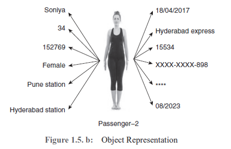

Object-oriented Programming
- Object is a concept or abstract or thing with boundaries and gives meaning to the problem.
-
Objects have two purposes:
- to promote understanding of the real world
- to provide practical basics for implementation.
- An object contains data and methods which manipulate this data.
- The class provides a template for the objects.
- In OOP, the data is protected and can be accessed only by the intended users, that is, an unauthorized user cannot use the data in an object.
-
OOP involves three main concepts that are the backbone of OOP:
- Encapsulation
- Inheritance
- Polymorphism

Encapsulation
- Encapsulation allows the programmer to hide inside the object both the data and the methods that act on that data.
- Encapsulation is the concept of binding data and methods together and it prevents unauthorized access.
- To access the data, developers use controlled access through the method which acts as an interface.
Inheritance
- Inheritance provides reusability by defining a new class from an already defined class.
- It allows creating a class that is similar to a previously defined class, the new class can also have its own data members and methods.
- The new class inherits its characteristics from the defined base class and the new class also has its own members.
- In OOP, a base class is seen as a parent and a derived class as a child.
Polymorphism
- Polymorphism is the ability of an object to take on many forms.
- Polymorphism is derived from two Greek words: poly and morphs.
- The word “poly” means many and “morphs” means forms. So polymorphism means many forms.
- Polymorphism principle is implemented with method overriding concept of java.
-
Polymorphism principle is divided into two sub-principles. They are:
- Static polymorphism
- Dynamic polymorphism
- Static binding is also called as early binding or compiler time binding.
- Overloading is compile time polymorphism where more than one methods share the same name with different parameters or signature and different return type.
- Dynamic binding is also called as late binding or run-time binding.
- Dynamic polymorphism is the polymorphism that exists at run-time. Here, Java compiler does not understand which method is called at compilation time.
- Only JVM decides which method is called at run-time.
- Method overloading and method overriding using instance methods are the examples for dynamic polymorphism.